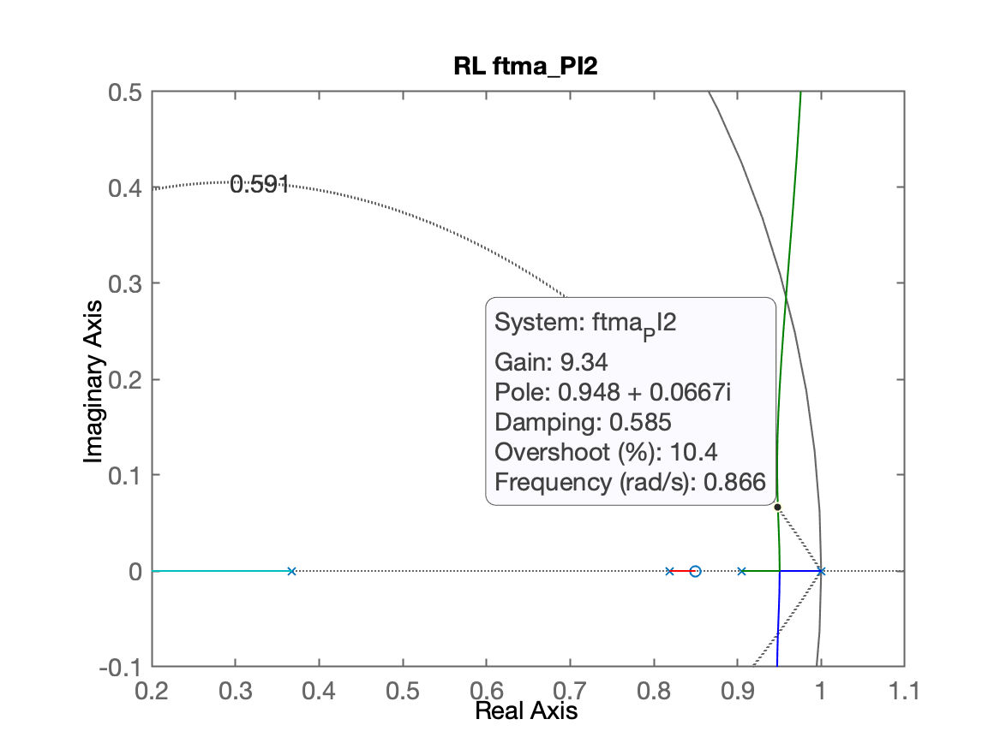
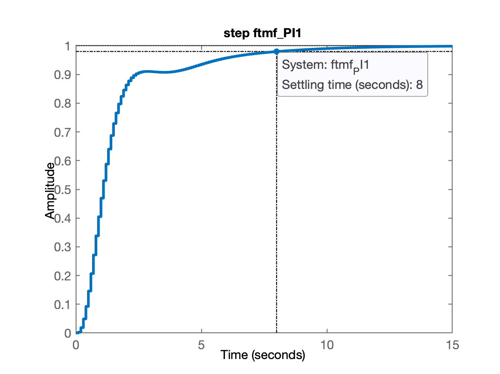
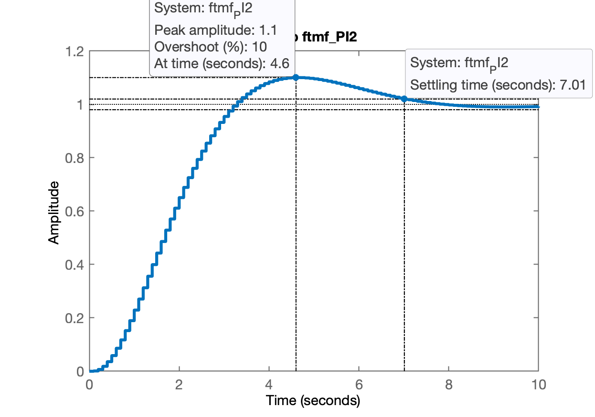
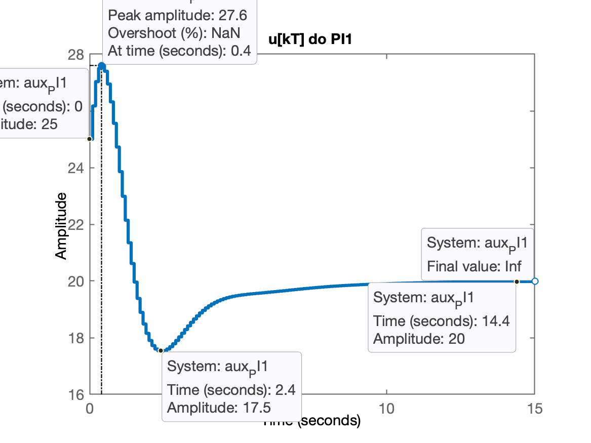
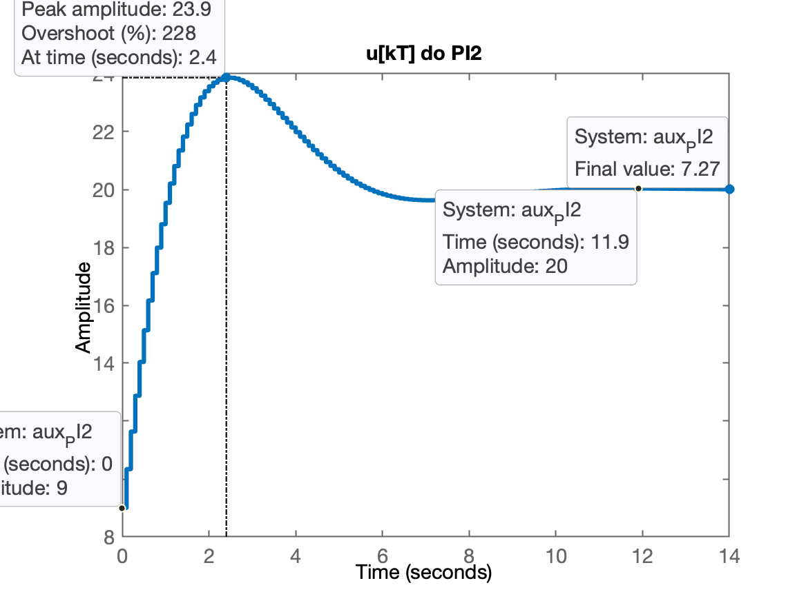
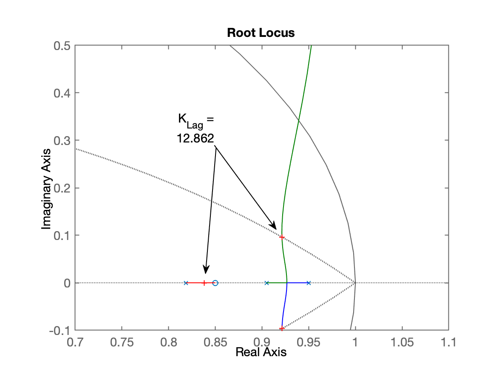
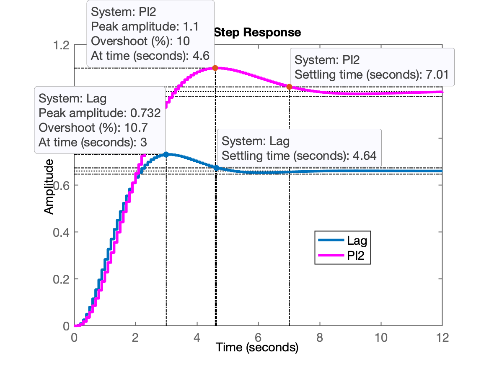

Projeto de Controladores
Aula de 03/04/2024 (continuação da aula de 27/03/2024).
Recuperando seção de trabalho anterior no Matlab:
>> cd .. % chaveando Matlab até pasta desejada>> load planta % recuperando dados antigosTeoria: Continuando da página: aula de 05/05/2021, terminando projeto de PI.
Projeto de PI
Selecionando posição do zero do PI.
Lembrando da eq. da planta:
x>> zpk(BoG) 0.00012224 (z+2.747) (z+0.1903) -------------------------------- (z-0.9048) (z-0.8187) (z-0.3679)Sample time: 0.1 secondsDiscrete-time zero/pole/gain model.Analisando 3 opções (e já ingressando os dados no Matlab):
xxxxxxxxxx>> % opção 1) pólo mais lento da planta < zero < pólo integrador>> C_PI1=tf([1 -0.95], [1 -1], T)C_PI1 = z - 0.95 -------- z - 1Sample time: 0.1 secondsDiscrete-time transfer function.>> % Opção 2) Colocar o 0,8187 < zero_PI < 0,9048 (entre os 2 pólos mais lentos da planta)>> C_PI2=tf( [1 -0.85] , [1 -1], T)C_PI2 = z - 0.85 -------- z - 1Sample time: 0.1 secondsDiscrete-time transfer function.>> % Opção 3) Colocar o zero do PI sobre o>> % pólo mais lento da planta (anulando este polo)>>>> polos=pole(BoG)polos = 0.90484 0.81873 0.36788>> C_PI3=tf( [1 -polos(1)] , [1 -1], T)C_PI3 = z - 0.9048 ---------- z - 1Sample time: 0.1 secondsDiscrete-time transfer function.>> % calculando as FTMA(z)'s para depois obter o RL...>> ftma_PI1=C_PI1*BoG;>> ftma_PI2=C_PI2*BoG;>> ftma_PI3=C_PI3*BoG;>> % Traçando os RL's>> figure; rlocus(ftma_PI1); hold on; zgrid(zeta, 0)>> title('RL ftma\_PI1')>> figure; rlocus(ftma_PI2); hold on; zgrid(zeta, 0)>> title('RL ftma\_PI2')>> figure; rlocus(ftma_PI3); hold on; zgrid(zeta, 0)>> title('RL ftma_PI3')>> % aplicando o mesmo "zoom" nas 3 figuras anteriores>> % implicar dar os seguintes comandos com foco em cada>> % janela diferente>> axis([0.2 1.1 -0.1 0.5])>> axis([0.2 1.1 -0.1 0.5])>> axis([0.2 1.1 -0.1 0.5])Vamos obter os seguintes resultados:



Sugere-se acomodar as 3 figuras lado a lado na tela para comparar os resultados obtidos e perceber a melhor opção.
Nesta caso, as opções mais "promissoras" seriam as opções 1 e 3:
xxxxxxxxxx>> ftmf_PI1=feedback(25*ftma_PI1, 1);>> ftmf_PI3=feedback(23*ftma_PI3, 1);>> figure; step(ftmf_PI1);>> title('step ftmf\_PI1')>> figure; step(ftmf_PI3);>> title('step ftmf\_PI3')E obtemos então as seguintes respostas ao degrau:


O PI3 parece ser a melhor opção... mas...
Vamos aproveitar a fechar a malha para o PI2 também:
xxxxxxxxxx>> ftmf_PI2=feedback(9*ftma_PI2, 1);>> figure; step(ftmf_PI2);>> title('step ftmf\_PI2')Resposta ao degrau obtida para PI2:

Conclusão: excetuando a opção 3 que depende de um cancelamento perfeito de polo-zero, a melhor opção de PI aqui seria o PI2.
O PI2 responde mais rápido que o PI1, seu ganho é menor, o que significa que gera amplitudes da ação de controle menores do que o PI1.
Levantando as amplitudes das ações de controle...
Deduzindo a eq. para e ...
Lembrando de Como usar a função step() do Matlab para plotar e , adaptamos para o caso no plano-z e teremos que:
Então só precisamos "isolar" a expressão acima entre e repassá-la como argumento de entrada para função step() do Matlab:
xxxxxxxxxx>> aux_PI1=(25*C_PI1)/(1+25*C_PI1*BoG);>> zpk(aux_PI1) % só para conferência 25 (z-1) (z-0.95) (z-0.9048) (z-0.8187) (z-0.3679) --------------------------------------------------- (z-1) (z-0.9641) (z-0.3498) (z^2 - 1.775z + 0.8037)Sample time: 0.1 secondsDiscrete-time zero/pole/gain model.>> aux_PI2=(9*C_PI2)/(1+9*C_PI2*BoG);>> zpk(aux_PI2) 9 (z-1) (z-0.9048) (z-0.85) (z-0.8187) (z-0.3679) -------------------------------------------------- (z-1) (z-0.8317) (z-0.362) (z^2 - 1.897z + 0.9035)Sample time: 0.1 secondsDiscrete-time zero/pole/gain model.>> % repassando para funções step():>> figure; step(aux_PI1); title('u[kT] do PI1')>> figure; step(aux_PI2); title('u[kT] do PI2')Obteremos os gráficos abaixo:


Conclusão final: o melhor PI e praticável seria o PI2. O PI2 é menos "agressivo" com a planta além de estabilizar relativamente rápido.
Controlador Lag
Seria o controlador por atraso de fase.
Este controlador é similar ao PI com o detalhe de que seu pólo não está em mas próximo disto.
Projetando então um Lag similar ao PI2.
xxxxxxxxxx>> % Revisando eq. do PI2>> zpk(C_PI2) (z-0.85) -------- (z-1)Sample time: 0.1 secondsDiscrete-time zero/pole/gain model.>> % Revisando eq. da planta>> zpk(BoG) 0.00012224 (z+2.747) (z+0.1903) -------------------------------- (z-0.9048) (z-0.8187) (z-0.3679)Sample time: 0.1 secondsDiscrete-time zero/pole/gain model.>> C_Lag=tf( [1 -0.85] , [1 -0.95], T)C_Lag = z - 0.85 -------- z - 0.95Sample time: 0.1 secondsDiscrete-time transfer function.>> ftma_Lag=C_Lag*BoG;>> figure; rlocus(ftma_Lag); hold on; zgrid(zeta, 0)>> axis([0.7 1.1 -0.1 0.5]) % zoom sobre a região de interesse>> [K_Lag,polosMF]=rlocfind(ftma_Lag)Select a point in the graphics windowselected_point = 0.92133 + 0.095975iK_Lag = 12.862polosMF = 0.92133 + 0.095975i 0.92133 - 0.095975i 0.83822 + 0i 0.359 + 0iO RL para este controlador fica:

Continuando com o projeto:
xxxxxxxxxx>> ftmf_Lag=feedback(13*ftma_Lag, 1);>> K_Lag=13;>> figure; step(ftmf_Lag, ftmf_PI2); % comparando PI2 x Lag>> legend('Lag', 'PI2')
Notamos um erro considerável envolvendo o Lag:
xxxxxxxxxx>> erro=((1-dcgain(ftmf_Lag))/1)*100erro = 33.898Note que para o Lag alcançou apenas 0,732 (poderia ter se aproximado mais de 1,1 (). Isto significa que posso aumentar o ganho do Lag para "subir" o valor máximo de ao mesmo tempo que isto reduziria o .
Poderia usar o App Control System Designer para encontar este valor de ganho:

Usando esta ferramenta encontramos (arquivo: C_Lag-ControlSystemDesignerSession.mat ).
Fim das atividades por hoje.
xxxxxxxxxx>> save planta % salvando dados para próxima seção de trabalho>> diary off % fechando diário de hoje>> quit % goodbyeArquivo planta.mat para algum eventual interessado. 🎉 ou 🍄.
Fernando Passold, em 03/04/2024.